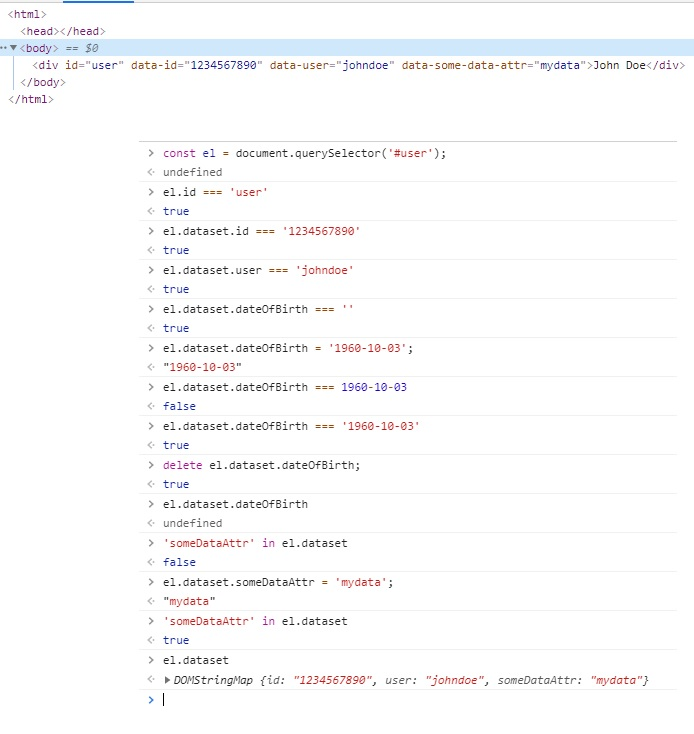

링크
HTMLElement.dataset
HTMLElement.dataset 읽기 전용 속성은 요소의 사용자 지정 데이터 특성(data-*)에 대한 읽기와
쓰기 접근 방법을 HTML과 DOM 양측에 제공합니다.
반환하는 값은 DOMStringMap으로, 각 데이터 특성마다 하나의 항목을 가집니다.
dataset 속성 자체는 읽기 전용이라는 점에 주의하세요.
모든 쓰기 작업은 dataset 안의, 데이터 특성을 나타내는 각각의 속성에 수행해야 합니다.
또한 HTML의 data-이름과 이에 대응하는 DOM dataset['이름']의 이름은 서로 일치하지 않으나,
다음 규칙에 따라 유사함을 기억하세요.
-
HTML의 사용자 지정 특성 이름은 data-로 시작합니다.
또한 문자, 숫자, 대시(-), 점(.), 콜론(:), 언더스코어(_)만 사용할 수 있고, ASCII 대문자(A-Z)는 사용할 수 없습니다.
-
JavaScript의 사용자 지정 특성 이름은 HTML 이름을 카멜 표기법으로 변환한 형태로, 대시, 점 등을 모두 제거합니다.
아래의 내용으로 HTML 데이터 속성을 어떻게 쓰는지 한번 살펴봅시다.
Name conversion(이름 변환)
dash-style에서 camelCase로 변환 : 커스텀 데이터 속성의 이름은 아래의 규칙에 따라 DOMStringMap의 key로 변환됩니다.
-
접두사 data-는 삭제됩니다. (대시포함)
-
a부터 z까지 ASCII 소문자 앞에 오는 모든 대시(U+002D)는 삭제되고 해당 소문자는 대문자로 변환됩니다.
-
다른 기호는(다른 대시들을 포함한) 바뀌지 않습니다.
camelCase에서 dash-style로 변환: key를 속성 이름으로 매핑하는 반대의 변환은 아래의 규칙을 따릅니다.
- 제약 조건: 대시 바로 뒤에는 a에서 z까지 ASCII 소문자를 쓸 수 없습니다.(변환전)
- 접두사 data-가 추가됩니다.
- A에서 Z까지 모든 ASCII 대문자는 대시와 해당 소문자로 변환됩니다.
- 다른 문자는 변하지 않습니다.
이러한 제약 조건은 반드시 두 변환이 서로의 역이 되도록 합니다.
예를 들어 data-abc-def라는 이름의 속성은 abcDef라는 키에 대응합니다.
Accessing values
-
속성들은 element.dataset.keyname과 같이 dataset의 객체 속성처럼 camelCase 이름(키)을 사용해서 설정하거나 읽을 수 있습니다.
-
속성들은 또한 element.dataset[keyname]과 같이 객체 속성의 괄호 신택스로 설정하거나 읽을 수 있습니다.
Syntax
- string = element.dataset.camelCasedName;
- element.dataset.camelCasedName = string;
- string = element.dataset[camelCasedName];
- element.dataset[camelCasedName] = string;
-
HTML elements에서 사용자가 지정한 data attribute에 직접 설정할 수 있으나 attribute names는 위의 데이터 문법을 반드시 사용해야 합니다.
